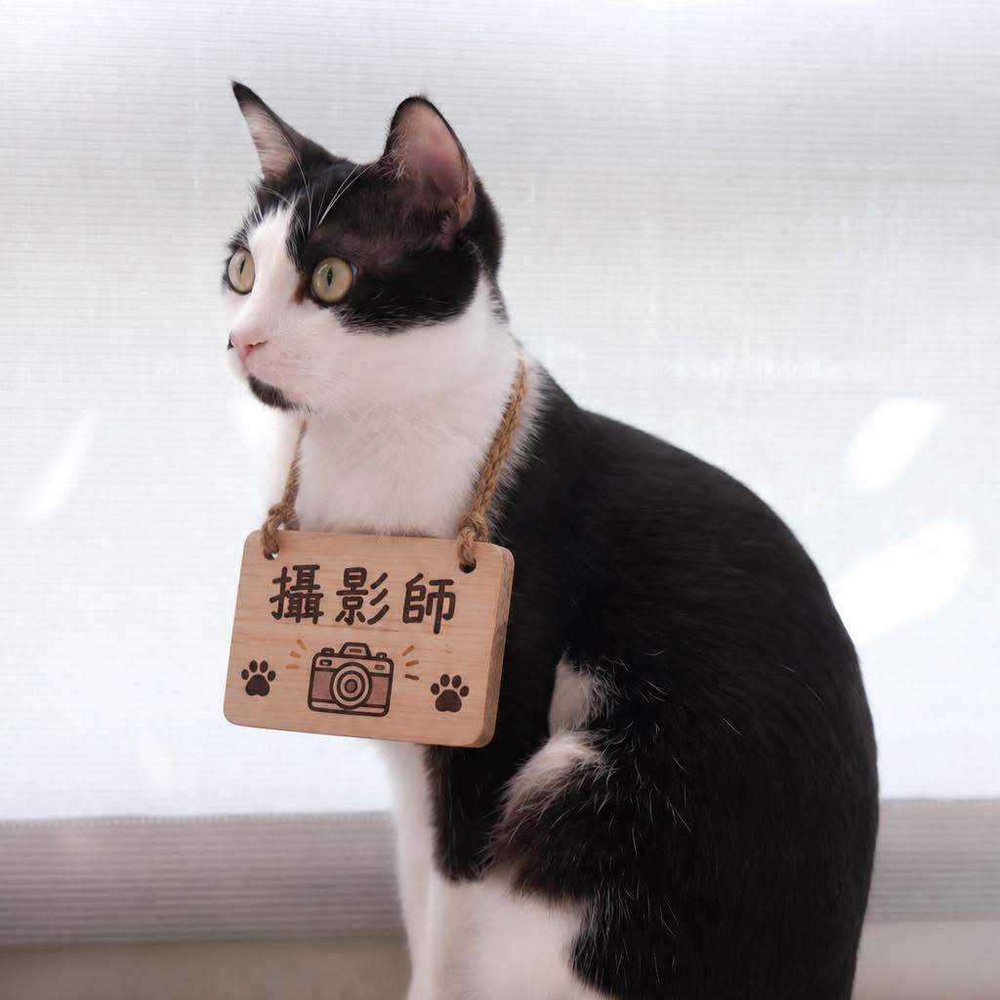

作品分類
SELECTED WORKS


關於我
我是莊莊,專注拍攝人像。比起擺好的姿勢,我更在意拍攝時的互動,讓被攝者放鬆下來,留下自然又有個性的畫面。使用 Fujifilm 的色彩與質感,搭配不同焦段,呈現不同的人像氛圍。
- 人像攝影
- 機身:Fujifilm X-T5
- 鏡頭:Tamron 17-70mm
- 鏡頭:Viltrox 25mm / 56mm
- 鏡頭:銘匠 7.5mm f/2 魚眼

PORTRAIT PHOTOGRAPHY · '26
專注人像攝影,喜歡在自然光裡捕捉人物最真實的神情與氛圍。目前接受人像拍攝邀約。
我是莊莊,專注拍攝人像。比起擺好的姿勢,我更在意拍攝時的互動,讓被攝者放鬆下來,留下自然又有個性的畫面。使用 Fujifilm 的色彩與質感,搭配不同焦段,呈現不同的人像氛圍。